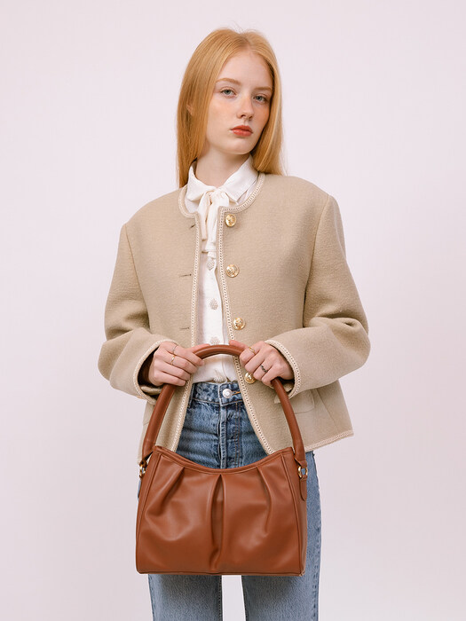

support@openui.design
+60 825 876
08:00 - 22:00 - Everyday
Copyright© OpenUI All Rights Reserved.
2021 Style Guide: The Biggest Fall Trends
You guys know how much I love mixing high and low-end – it’s the best way to get the most bang for your buck while still elevating your wardrobe. The same goes for handbags! And honestly they are probably the best pieces to mix and match. I truly think the key to completing a look is with a great bag and I found so many this year that I wanted to share a round-up of my most worn handbags.
I found this Saint Laurent canvas handbag this summer and immediately fell in love. The neutral fabrics are so beautiful and I like how this handbag can also carry into fall. The mini Fendi bucket bag with the sheer fabric is so fun and such a statement bag. Also this DeMellier off white bag is so cute to carry to a dinner with you or going out, it’s small but not too small to fit your phone and keys still.
support@openui.design
+60 825 876
08:00 - 22:00 - Everyday
Copyright© OpenUI All Rights Reserved.